4. キューシステム¶
キューシステムはモジュール間の相互依存性を低減することで、柔軟性のあるアプリケーション実現に寄与する。
4.1. 同期通信と非同期通信¶
同期処理は、リクエスト元がリクエスト先に処理を依頼したときに、処理完了まで待つ通信方式である。 非同期通信は、リクエスト元がリクエスト先に処理を依頼したときに、処理完了を待たずに後続処理を行う通信方式である。
同期通信には、以下のような課題が挙げられる
レイテンシー：呼び出し先での遅れが積み重なり、大きなレイテンシーとなる
信頼性：単一障害点が生まれる可能性がある
結合度：結合度が高まり、変更がし辛くなる
それに対して、SQSなどのキューイングシステムを利用して非同期通信を実現することで対策できる
レイテンシー：別処理をまたないので、待ち時間は発生しない
信頼性：SQSなどのAWSサービスは高可用性が担保されている
結合度：非同期通信は密結合ではなく、疎結合を実現する
4.2. キューの必要性：柔軟性のあるアプリケーション¶
柔軟性とは
ビジネス要求に対するサービスの変更のしやすさ
すなわち、以下の観点を満たしている
影響範囲の把握と限定が容易
開発・テストがし易い（モジュール間は異なる言語でもOK）
リリースし易い
リリースに失敗した時の影響範囲が小さい
上記1-3の観点を満たし、柔軟性のあるアプリケーションとするために
モジュール強度を高めたアプリの適切な分割をする
モノリスからより小さなコンポーネントへ
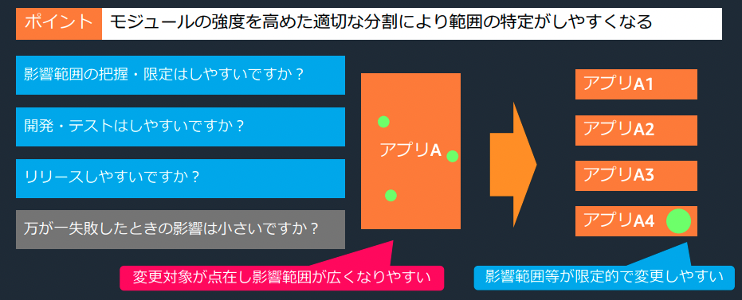
また、4の観点を満たすためには、蜜結合とならないように
コンポーネント感の結合を弱めることで影響の波及を限定的にする。
蜜結合から疎結合へ
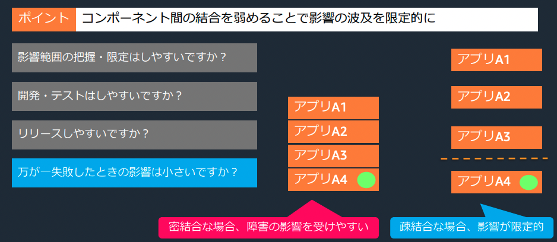
キューなどのコネクターを利用した疎結合な呼び出しが重要
繋ぐコンポーネントが柔軟性あるアプリケーションを可能にする
4.3. アプリケーションをつなぐ方式¶
アプリケーションをつなぐ方式は以下の4つの問いにを踏まえて整理する
送信するデータの種類は何か
ストリーミング/メッセージングの検討呼び出した処理の完了確認は必要か否か
同期/非同期の検討処理を行うタイミングは任意か否か
push/pull方式の検討処理の依頼先が1ヶ所か複数か
P2P publish/subscribe方式の検討
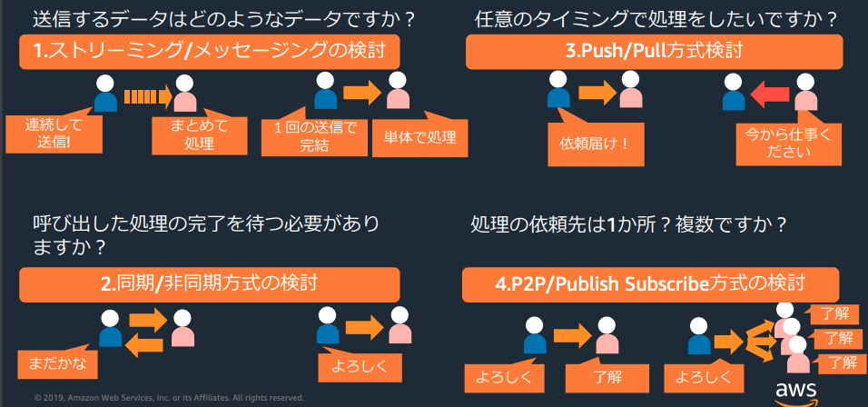
4.3.1. ストリーミング/メッセージングの検討¶
■ストリーミング
一連のデータを送り続け、データの順序性に意味があって、まとめて処理する
■メッセージング
単発で完結する要求や応答をやり取りする
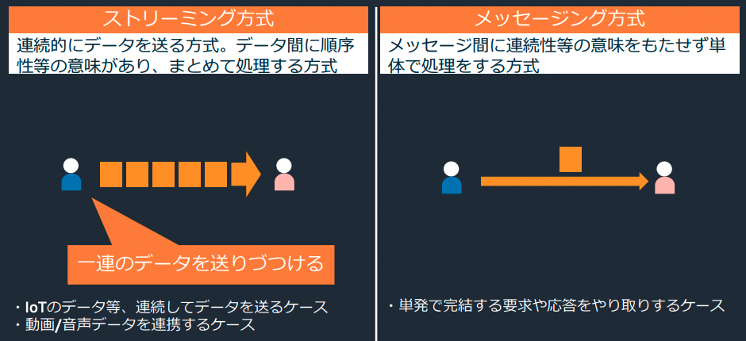
4.3.2. 同期/非同期の検討¶
■同期
ProducerがConsumerの処理の完了を待つ方式
■非同期
ProducerがConsumerの処理を待たない方式
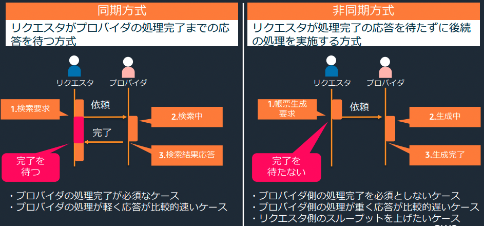
4.3.3. push/pull方式の検討¶
■push方式
Producerがメッセージを送りつける
■Pull方式 Consumerがメッセージを取得しにいく
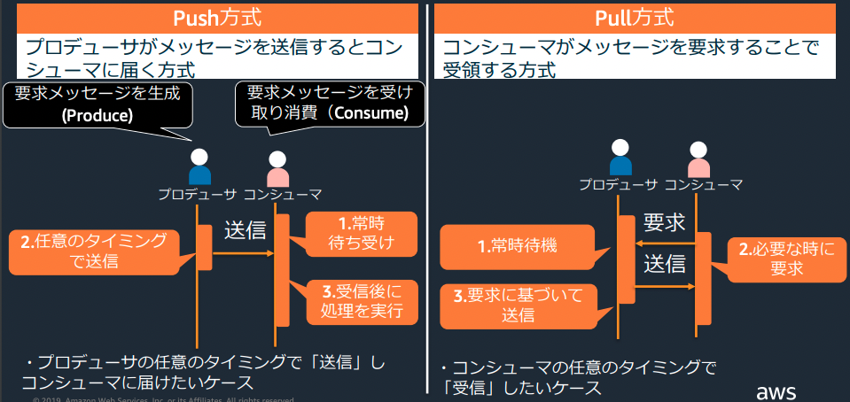
■Connector
ProducerもConsumerも任意のタイミングで処理するために、Connectorを挟む
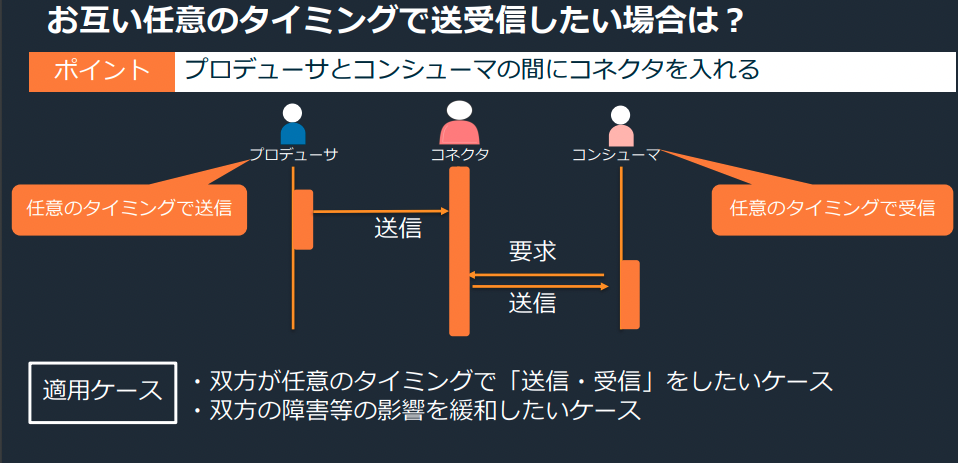
4.3.4. P2P publish/subscribe方式の検討¶
■P2P
メッセージとConsumerが一対一で対応する
すなわち、1つのメッセージを1つのConsumerが処理する。
■Publish/Subscribe方式
1つのメッセージを複数のConsumerが受信する方式
1つのリクエストで複数の処理を並列して実施したい場合に有用
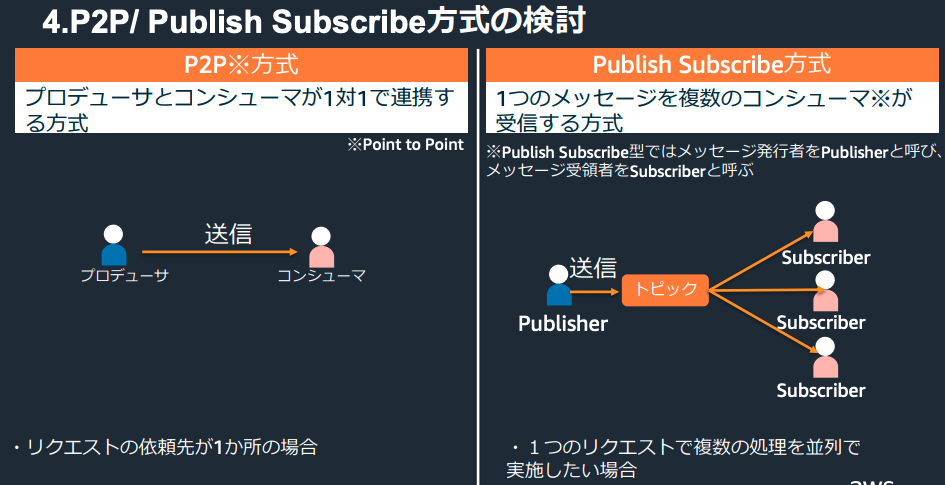
4.4. 関連するAWSサービスとその比較¶
アプリケーションの連携をサポートする主要なAWSマネージドサービスには以下が挙げられる
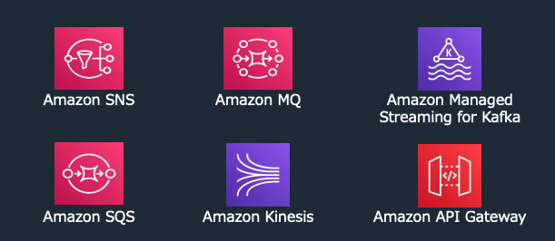
4.4.1. ストリーミングデータを扱いたい場合¶
以下の３つのサービスが対象
Amazon kinesis
テキストから動画までのストリーミングデータを扱うことが可能Amazon Managed Streaming for Kafka
ストリーミングデータを扱うApache Kafkaをマネージドに利用することが可能Amazon API Gateway WebSockerをサポート
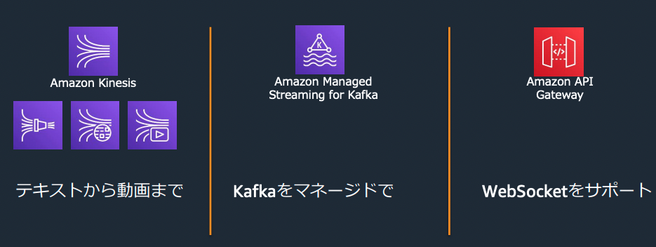
4.4.2. メッセージングデータを扱いたい場合¶
以下の３つのサービスが対象
Amazon SNS
Amazon SQS
Amazon MQ
■仕組み的な分類
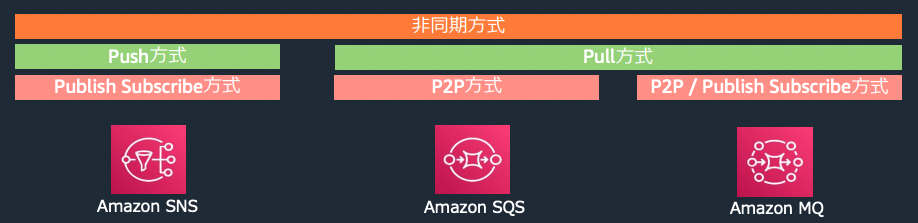
■特徴的な分類
ポイントはSQSとSNSはクラウドネイティブであり、MQはアプリケーションの移行を意識している点
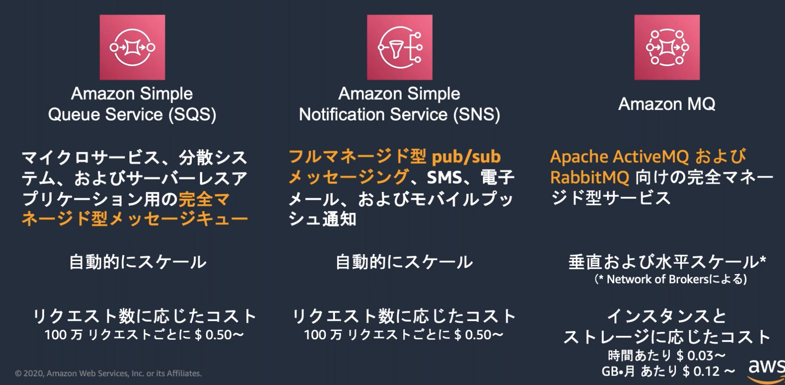
■マッピング図
ポイントは、SQSはキューサービスであり、SNSはMessagingサービスである点。
なお、SNSにはモバイル通知の機能もあるが、Amazon pinpointで代用できるため、あまり触れない
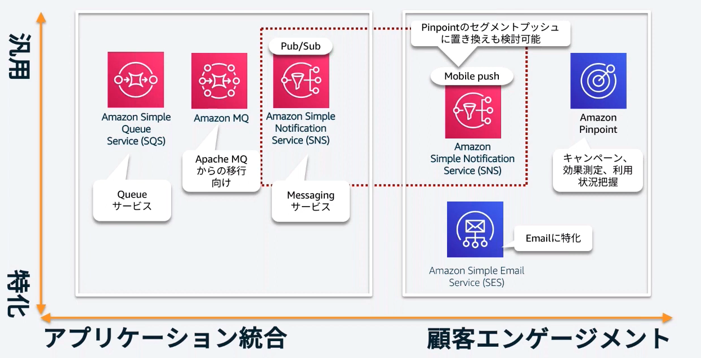
■使い分けフローチャート
ポイントは以下
新規かつリファクタリング可能ならSNS/SQS
最近SNS/SQSがFIFO対応となったので、選択可能性が高まった
現行を継続する場合はMQかEC2作り込み
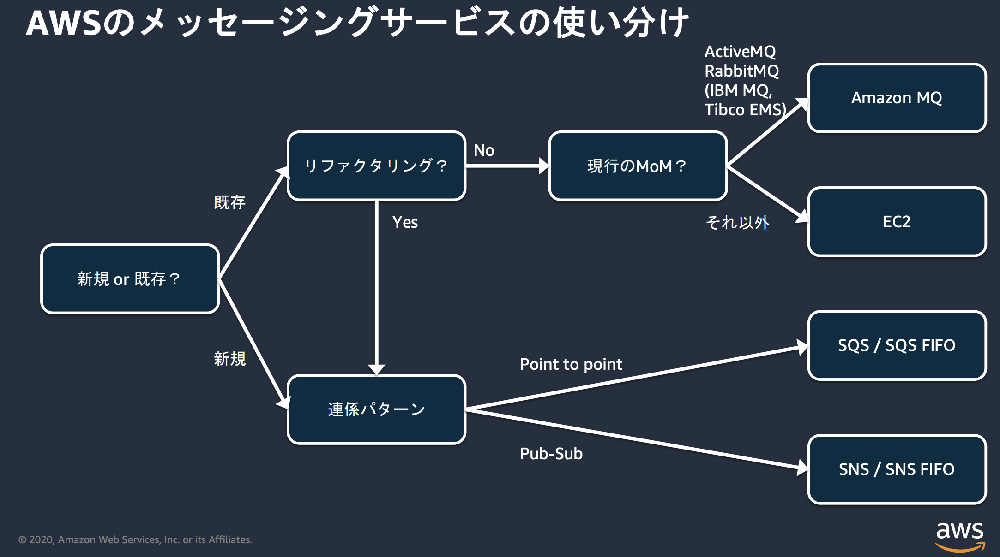
4.4.2.1. Amazon MQ¶
１番の特徴は、オンプレミスで既にキューシステムを利用しているアプリケーションからAmazon MQへの移行が比較的容易に可能な点。
SNSやSQSはクラウドネイティブなサービスであり、連携するアプリケーションとしても、クラウドネイティブなアプリを想定している。 そのため、オンプレミスなどトラディショナルなアプリとの連携を考える時に、アプリケーション側に改修が必要になる課題があった。
スケーリングについては、自動スケーリングではない点に注意
5. モニタリング¶
キューイングサービスにおける監視処理については、以下の3つの観点に注目するUSEメソッドが適用可能
Utilization:使用率、特定の時間内にどれだけ利用されたか
Saturation:飽和、処理できていない要求がどれだけあったか
Errors:エラー率、どれだけ処理を失敗したメッセージがあるか